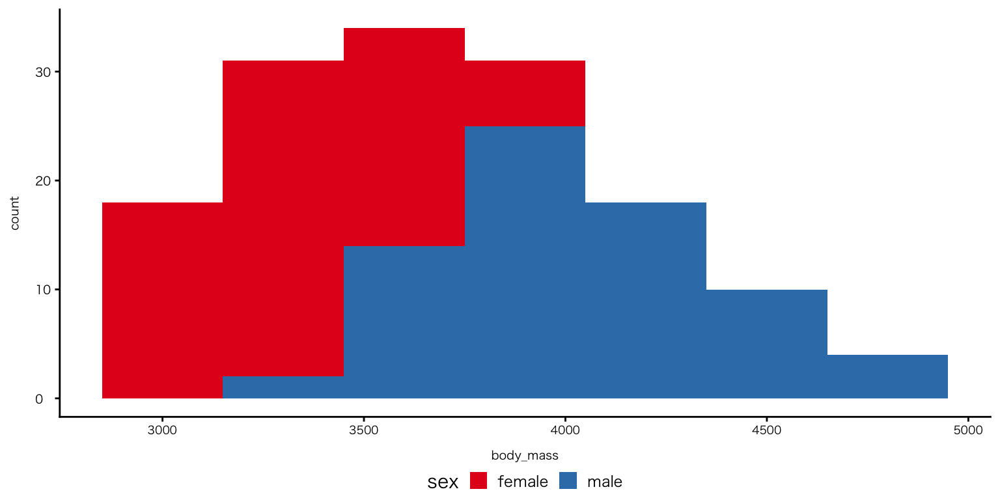
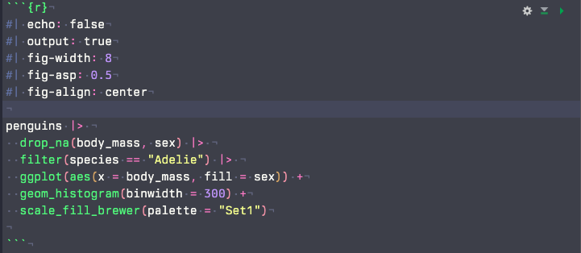
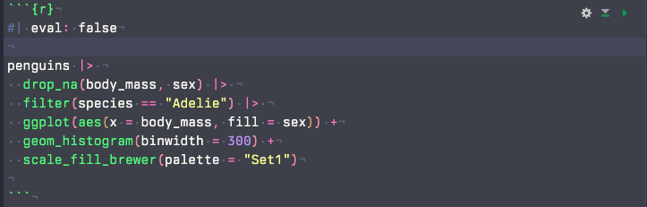
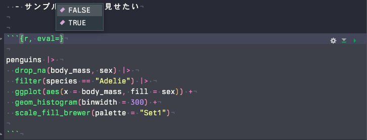
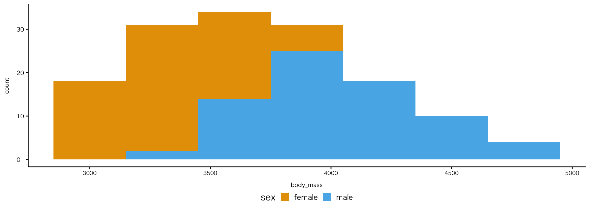
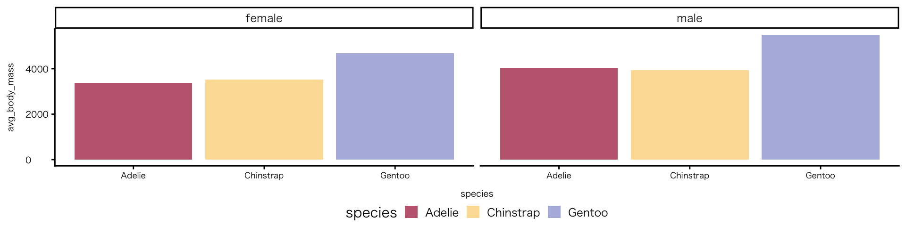
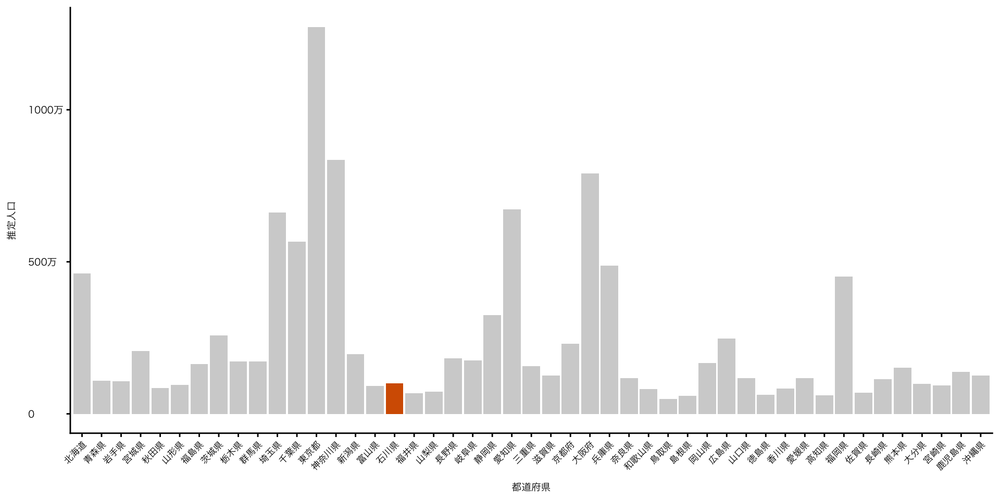
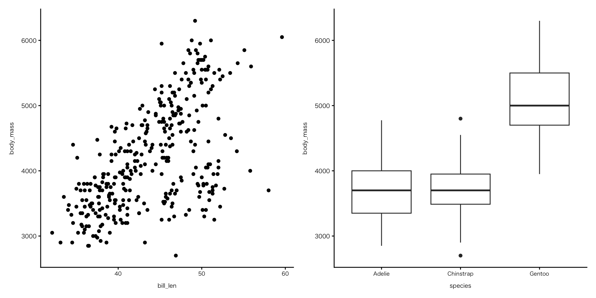
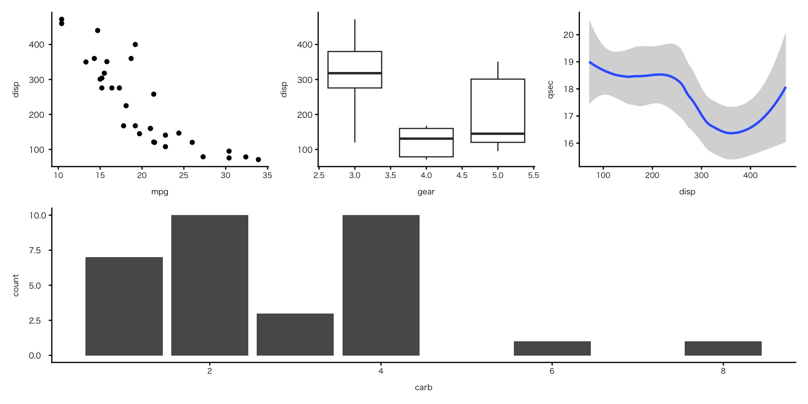
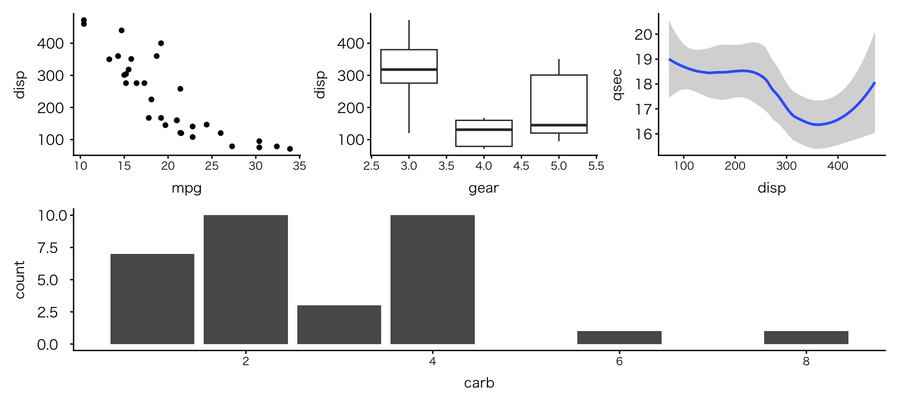

![]()

RとQuartoではじめるデータサイエンス
#5 可視化(2)
0. 本日の目標
本日の目標
- レポート課題（特に内容と締め切り）を理解する
- チャンクオプションを試してみる
- データの特徴に見合った配色変更する
- データの特徴に見合ったラベル変更する
- 複数の図を並べてみる
Ⅰ. レポート課題
レポート課題
2. 提出先と締め切り
- 提出先：dropbox
-
締め切り：2026年6月3日（水）10時30分まで
- 最終授業日の開始直前
-
ファイル: zipファイル
- ファイル名のどこかに、氏名を特定できる文字を入れて下さい
-
再提出:
- 再提出する場合は6月5日（金）23:59分までに再提出して下さい（必須ではありません。提出先は同じ）。最終版のファイルで成績を評価します
レポート課題
4. 内容
- タイトルと見出し
- 分析の対象と分析の目的
- 図（最低3つ）とそれぞれの簡単な（2〜3行程度）説明
- 結論：作図を通して何が明らかになったのか（3〜5行程度）
- 出典
- データの出典
- この他に使用した文献などがあれば､それも記載すること
- ただし､Rやggplotの使い方､作成に関する出典は記載しない
Ⅱ. 前回の振り返り
授業の感想
ファイルは階層構造になっていることは何となくわかっていたが、絶対パスや相対パスがあることを初めて知ったし、まだ少しパスについて詳しく知りたいと思った（安用寺さん）
今まではペンギンのデータセットを使っていたので、実際にどのように使うかのイメージがわかなかったが、社会にあがっているデータをダウンロードして使える形にしたことによって、自分でも有効に使えそうと思えたから（山田さん）
今回の講義を通して様々なグラフの表現技法について習得して、使える幅が広がってワクワクしたから。ただ、やはり表現の豊かさに比例して関数の種類も多く感じられたため、使いこなすのは大変そうだと思った（山本さん）
前回の授業の補足
- SSDSEについての統計センターからの返答
- Rに適したファイルの公開を予定している
前回の積み残し
- Ⅲ. 必要なデータを取り出す（基本編）から
Ⅲ. ggplotの「日本語問題」
ggplotの「日本語問題」（通称：豆腐）
現象と原因
- グラフ中の日本語が □（四角）で表示される
- 軸ラベル（x, y）；凡例（legend）；タイトル；geom_text()
- 見た目が「豆腐」に見えるため「豆腐現象」と呼ばれる
- ggplotのデフォルトフォントが日本語の文字を持っていないために生じる
対応方法
- ggplotのコード内（通常、最終行）で、日本語フォントを指定する
- Windows
theme(text = element_text(family = "Meiryo"))- mac
theme(text = element_text(family = "Hiragino Sans"))Ⅳ. チャンクオプション
チャンクオプション
- 各R chunkの冒頭に書く
-
#|から書き始める
コードの実行関係
- echo: コードを表示するか（デフォルトはtrue = 表示する）
- output: 実行結果を表示するか（デフォルトはtrue = 表示する）
- eval: コードを実行するか（デフォルトはtrue = 実行する）
図の表示関係
- fig-width: 数字を大きくすると横に広がる（インチ）
- fig-height: 数字を大きくすると縦に長くなる（インチ）
- fig-asp: アスペクト比（1が正方形）
- fig-align: 図の位置の変更（left; right; center）
チャンクオプション

- ただし、echoとoutputは、YAMLでグローバル設定するのが普通(後述)
チャンクオプション
#| echo: false
#| output: true
#| fig-width: 8
#| fig-asp: 0.5
#| fig-align: centerチャンクオプション
チャンクオプション
evalの使用目的
- 実行できない（エラーが起こる）チャンクの実行回避
- 実行したくないチャンクの実行回避
- 実行に時間がかかるチャンクの実行回避
- サンプルコードだけ見せたい
チャンクオプション
evalの使い方

- 補完入力されない

- 補完入力される
YAML設定
YAMLでのチャンクオプションの設定
- 個別チャンクに書かなくても、quartoファイル全体のデフォルトを設定できる
設定
- execute: コード実行に関する設定
- freeze: auto：変更がない場合、前回の実行結果を再利用
- echo: false：コードを表示しない
- warning: false：警告を表示しない
YAML設定
- YAMLの最後の方に以下のコードを入れましょう
execute:
freeze: auto
echo: false
warning: falseⅤ. 図の見た目・体裁
theme
ggplot公式theme
- theme_gray()：デフォルト
- theme_bw()：白黒（論文向け）
- theme_classic()：軸だけ（推奨）
- theme_minimal()：最小限（プレゼン向け）
- theme_void()：何もなし

色
カラーパレット
カラーパレットは、プロットに用いるデータを表現する能力に基づいて選ぶのがよいでしょう。例えば国や性別など、順序なしのカテゴリカル変数を表すには、簡単に混同されないような､はっきり区別できる色が必要です。その一方で、教育レベルといったような順序付きカテゴリカル変数では、大小や早い遅いなど段階的に変化する色の枠組みが必要です。それ以外にも変数の種類があります。例えば、順序付き変数でも、リッカート尺度 (Likert scale)のように中間的な点から双方向に広がるにつれて離れていくような尺度を取り扱う場合はどうすればよいでしょうか。繰り返しになりますが、この質問は色の尺度で変数をマッピングする場合にどうやって正確さや忠実さを確保するのかという問題です。手元のデータの構造を反映したパレットを選ぶように注意してください。例えば、連続的な変化をカテゴリカルなパレットでマッピングしないように、また、双方向パレットを使う場合は中間点がはっきりしない変数には用いないようにしましょう（ヒーリー，キーラン (2021), 283ページ）。
色
色の変更：ggplotのパレット
fill
colour

色
色の変更：マニュアル指定
- カラー名の他、HTMLカラーコードも使用可
- Cf. WEB色見本 原色大辞典


色
色の変更：追加パッケージ
- 色指定の関数はパッケージごとに異なる
- パッケージのインストールと読み込みが必要
penguins |>
drop_na(species, sex, body_mass) |>
group_by(species, sex) |>
summarise(avg_body_mass = mean(body_mass), .groups = "drop") |>
ggplot(aes(x = species, y = avg_body_mass, fill = species)) +
geom_col() +
facet_wrap(~ sex) +
scale_fill_paletteer_d("DresdenColor::briefcases") # "ダブルクォテーション内がパレット名"
色
色の変更：追加パッケージ
- 色指定の関数はパッケージごとに異なる
- パッケージのインストールと読み込みが必要
penguins |>
drop_na(species, sex, body_mass) |>
group_by(species, sex) |>
summarise(avg_body_mass = mean(body_mass), .groups = "drop") |>
ggplot(aes(x = species, y = avg_body_mass, fill = species)) +
geom_col() +
facet_wrap(~ sex) +
scale_fill_manual(values = met.brewer("Klimt", 3)) # "ダブルクォテーション内がパレット名"
色
色の変更：追加パッケージ
- 色指定の関数はパッケージごとに異なる
- パッケージのインストールと読み込みが必要

色
色の透過度
- 透過度は
geom_()内のalphaで指定- 0: 完全に透明（見えない）/ 1: 完全に不透明（普通の色・デフォルト値）

色
データによる色分けではない色の変更
- データと関係ない固定色の指定
- fillでもcolourでもない色を変えたい
- 方法：aesの外で指定する
-
geom_()内のfillで指定 - Cf. aes() の中：データに応じて変わる
-
軸ラベル
label_percent()関数
- 数値をパーセント形式に変換する関数
scale_x_continuous()関数 / scale_y_continuous()関数
- 軸の設定を変更する関数
- continuous は「連続値」という意味
軸ラベル
label_comma()関数
- 軸の値に,を足す関数
- 例：100000→100,000

軸ラベル
label_kansuji()関数
- 日本語表記の桁数に変える関数
- 例：100,000→10万
- zipangu：日本語表記（年号・住所への対応）に対応するパッケージ
パッケージのインストールと読み込みが必要 パッケージがCRANにおいてないため、install.packagesが使えない パッケージremotesを利用。以下のコードをConsoleに入力して実行
install.packages("remotes")
remotes::install_github("uribo/zipangu")df_pop_all |>
mutate(都道府県 = factor(都道府県, levels = pref_levels)) |>
ggplot(aes(x = 都道府県, y = 推定人口)) +
geom_col(fill = "#D55E00") +
gghighlight(都道府県 == "石川県") +
scale_y_continuous(labels = zipangu::label_kansuji()) + # y軸のラベルを日本語にして視認性を高める
theme(axis.text.x = element_text(angle = 45, hjust = 1)) # x軸のラベルの角度を調整
軸ラベル・凡例ラベル
labs()関数
- 図に表示される説明的な文字を設定（変更）する関数
- x軸・y軸のラベル（x; y）
- 凡例のラベル（fill; colour）
NULLを入れると（““不要）、ラベルは空白になる。ラベルが自明の場合、図に余分な情報がついていない方が見やすい図になる。
labs(
title = "",
subtitle = "",
caption = "",
x = "",
y = "",
colour = "",
fill = "",
shape = "",
size = ""
)軸ラベル・凡例ラベル
fill

軸ラベル・凡例ラベル
colour

ハイライト
- 注目してほしい部分だけを浮かび上がらせる
パッケージのインストールと読み込みが必要
ggplotのデフォルトテーマ（全プロットに適用）
- 図ごとに、ラベルサイズなどを設定するのは面倒なので、Setup Chunkで一括設定する
-
Setup Chunkのlibrary()の次に、以下のコードを貼り付けて下さい
- 以下のコードは、theme、軸、凡例も一括設定している
- グラフごとに設定すると、コードがぐちゃぐちゃになりやすく、また、ファイル内で見た目の統一が図れない
# ggplotのデフォルトテーマ（全プロットに適用） ----
ggplot2::theme_set(
theme_classic() +
theme_sub_axis_bottom(
title = element_text(size = 11, margin = margin(t = 8)),
text = element_text(size = 8.5)
) +
theme_sub_axis_left(
title = element_text(size = 11, margin = margin(r = 8)),
text = element_text(size = 11, hjust = 0)
) +
theme_sub_legend(
position = "bottom",
margin = margin(t = -4),
key.size = unit(8, "mm")
) +
theme_sub_plot(
title = element_text(size = 20),
caption = element_text(size = 14)
)
)# ggplot theme_classicのフォント設定 ----
ggplot2::theme_set(
theme_classic(base_family = "Hiragino Sans") +
theme_sub_axis_bottom(
title = element_text(size = 11, margin = margin(t = 8)),
text = element_text(size = 8.5)
) +
theme_sub_axis_left(
title = element_text(size = 11, margin = margin(r = 8)),
text = element_text(size = 11, hjust = 0)
) +
theme_sub_legend(
position = "bottom",
margin = margin(t = -4),
key.size = unit(8, "mm")
) +
theme_sub_plot(
title = element_text(size = 20),
caption = element_text(size = 14)
)
)Ⅵ. テキストラベル
テキストラベル
geom_text()関数
- 棒の上に「数」を表示する：生データ（集計前データ）の場合

テキストラベル
geom_text()関数
- 棒の上に「数」を表示する：集計後データの場合

帯グラフ
- 棒の上に「数」を表示する：集計後データの場合②比率と実数
penguins |>
drop_na(species, island) |>
count(island, species) |>
group_by(island) |>
mutate(prop = n / sum(n)) |>
ggplot( aes(x = island, y = prop, fill = species)) +
geom_col(position = "fill") +
geom_text(
aes(
label = str_c( # 複数の要素を文字列として結合する
scales::percent(prop), # 比率（%が付される）
"\n(n=", n, ")" # 実数
)
),
position = position_fill(vjust = 0.5), # 位置
size = 3 # 文字サイズ
) +
scale_y_continuous(labels = scales::label_percent()) + # y軸を比率表示に変更
labs(y = "proportion") # y軸のラベルを変える（%が付されているので、proportionを削って""だけにしてよい＝y軸のラベルがなくなる）
Ⅶ. 複数の図の配置
複数の図の配置
patchworkパッケージ
パッケージのインストールと読み込みが必要
手順
- 同一チャンク内に、複数のggplotの結果をオブジェクトに代入
-
+で並べる（例：p1 + p2）
複数の図の配置
p1 <-
penguins |>
drop_na(bill_len, body_mass) |>
ggplot(aes(x = bill_len, y = body_mass)) +
geom_point()
p2 <-
penguins |>
drop_na(species, body_mass) |>
ggplot(aes(x = species, y = body_mass)) +
geom_boxplot()
p1 + p2
複数の図の配置
- 複雑な配置も可能
- 公式サイトのサンプル
p1 <- ggplot(mtcars) + geom_point(aes(mpg, disp))
p2 <- ggplot(mtcars) + geom_boxplot(aes(gear, disp, group = gear))
p3 <- ggplot(mtcars) + geom_smooth(aes(disp, qsec))
p4 <- ggplot(mtcars) + geom_bar(aes(carb))
(p1 | p2 | p3) /
p4
Ⅷ. 次回の授業と宿題
次回の授業と宿題
次回：5月20日（水）
可視化(3)
- 行結合
- 地図データ
出力
- 図の書き出し
- 出力形態の変更
- CSS
次回の授業と宿題
宿題
授業の感想
- 回答先：Google Forms
- 締め切り：5月15日（金）23時59分
演習
- 内容：演習⑨
- ファイル：演習の該当箇所を抜き出すのではなく、qmdファイルをそのまま提出
- ファイル名：どこかに氏名を特定できる文字を入れて下さい
- 提出先：dropbox
- 締め切り：5月18日（月）23時59分
引用文献
ヒーリー，キーラン, 2021. データ分析のためのデータ可視化入門, 瓜生真也・江口哲史・三村喬生 訳. 講談社.